Sagae
Sagae · Yamagata
Sagae
Highlighted on the Yamagata map.
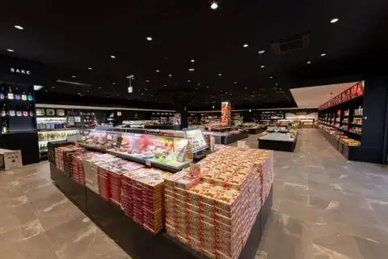
Stay
割烹旅館 吉本
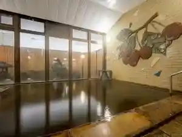
Kappou Ryokan Yoshimoto
Ryokan inn in Sagae, Yamagata.
美人の湯 寒河江温泉 ホテルシンフォニー本館
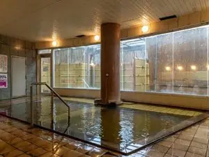
Bijin No Yu Sagae Onsen Hoterushinfonii Honkan
Hotel in Sagae, Yamagata.
チェリーパークホテル
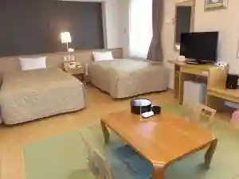
Cheriipaakuhoteru
Hotel in Sagae, Yamagata.
ホテルシンフォニーアネックス
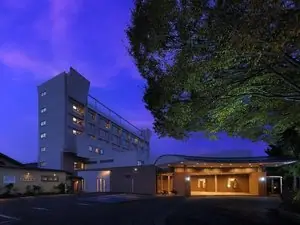
Hoterushinfoniianekkusu
Hotel in Sagae, Yamagata.
Dining
そば処吉亭
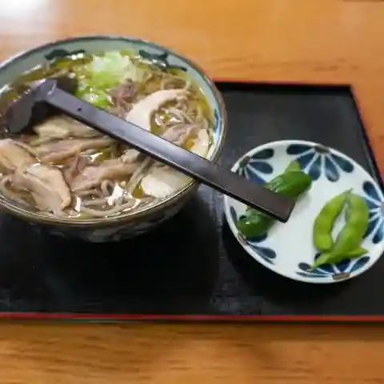
Soba Tokoro Kichi Tei
Soba restaurant in Sagae, Yamagata.
福家そばや
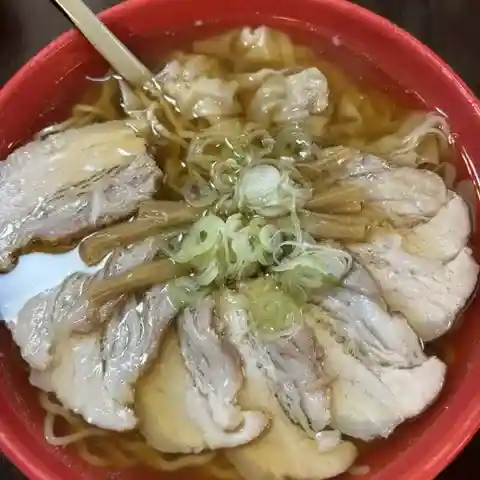
Fukuya Sobaya
Ramen shop in Sagae, Yamagata.
幸めん
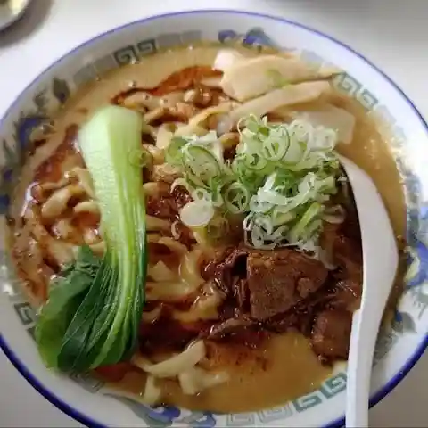
Sachi Men
Ramen shop in Sagae, Yamagata.
焼肉名匠 山牛
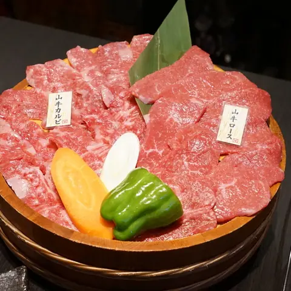
Yakiniku Meishou Yama Ushi
Yakiniku (grilled meat) restaurant in Sagae, Yamagata.
そば処 かつら
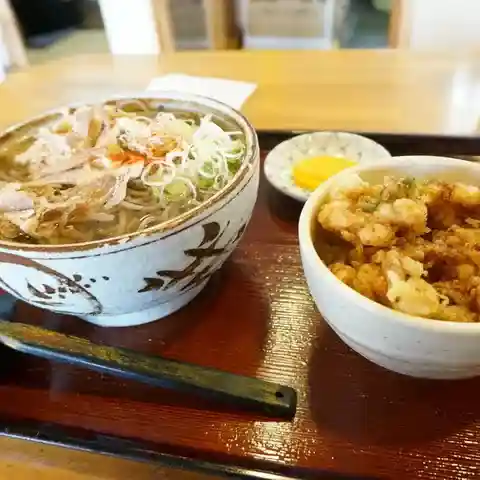
Soba Tokoro Katsura
Soba restaurant in Sagae, Yamagata.
そば処ひふみ
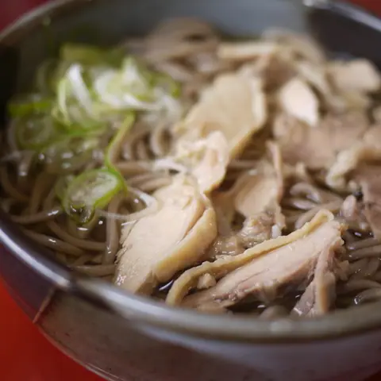
Soba Tokoro Hifumi
Soba restaurant in Sagae, Yamagata.
佐平治食堂
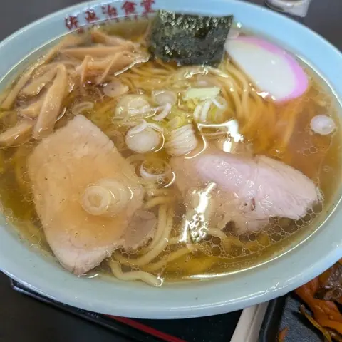
Saheiji Shokudou
Shokudo diner in Sagae, Yamagata.
皿谷食堂
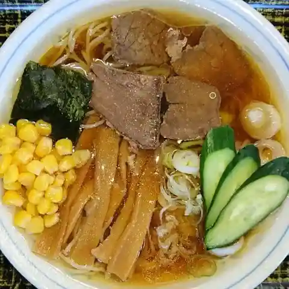
Saraya Shokudou
Ramen shop in Sagae, Yamagata.
さくらんぼ会館
Sakuranbo Kaikan
Gelato and ice-cream shop in Sagae, Yamagata.
焼き鳥さらや
Yakitori Saraya
Yakitori restaurant in Sagae, Yamagata.
といや ほなみ分店
Toiya Honami Bunten
Ramen shop in Sagae, Yamagata.
GEA 0053
Gea 0053
Café in Sagae, Yamagata.
そば処ふもと
Soba Tokoro Fumoto
Soba restaurant in Sagae, Yamagata.
cherry cafe chouchou
Cherry Cafe Chouchou
Café in Sagae, Yamagata.
そば焼肉ふくろう
Soba Yakiniku Fukurou
Yakiniku (grilled meat) restaurant in Sagae, Yamagata.
そば処鈴亭
Soba Tokoro Suzu Tei
Soba restaurant in Sagae, Yamagata.
肉そば 十三
Niku Soba Juusan
Soba restaurant in Sagae, Yamagata.
柳生食堂
Yagyuu Shokudou
Shokudo diner in Sagae, Yamagata.
チェリーランドさがえ
Cheriirando Sagae
Roadside-station eatery in Sagae, Yamagata.
とうふ工房 清流庵
Toufu Koubou Seiryuu Iori
Tofu restaurant in Sagae, Yamagata.
寺そば 寺カフェ 慈恩寺テラス内
Tera Soba Tera Kafe Jion Tera Terasu Nai
Soba restaurant in Sagae, Yamagata.
パリから来た和
Pari Kara Kita Wa
Creative-cuisine restaurant in Sagae, Yamagata.
さくらんぼ友遊館
Sakuranbo Yuuyuu Kan
Gelato and ice-cream shop in Sagae, Yamagata.
慈恩寺そばや
Jion Tera Sobaya
Soba restaurant in Sagae, Yamagata.
Sights
Michi-no-Eki Sagae Cherry Land
A large site on the Sagae River with Yamagata specialities, sweets made from seasonal fruit and dishes using brand-name beef; the Cherry Hall on the same grounds sells local cherries and produce.
Furusawa Brewery Museum
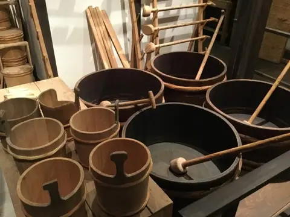
The Furusawa family, said to have been safflower merchants, have brewed sake in Sagae since 1836 and are known for Sawamasamune. The museum is in the brewery building used from 1917 to 1983.
Jionji Terrace
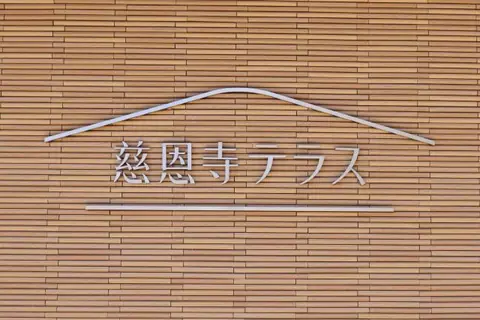
Amazing facility that connect time and place!
Sagae Park
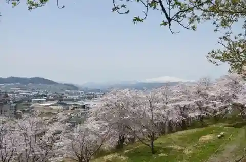
https://yamagatakanko.com/en/attractions/detail_872.html
Sagae Folk Museum
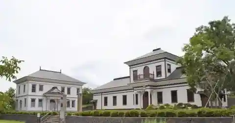
https://yamagatakanko.com/en/attractions/detail_414.html